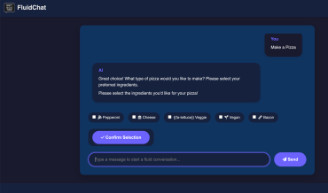

aiffy is the UI shell for a local LLM web interface, built for fast chat interaction and practical model tooling.

aiffy is a lightweight UI shell for local LLMs that builds on a modern Svelte-based frontend and a local model-serving backend. It is designed for developers and AI practitioners who want a clean chat-first interface without cloud dependencies.
The main goals of aiffy are:
Local LLM UI shells are essential when you want to experiment with models on your own hardware. aiffy combines the responsiveness of a browser-based interface with the flexibility to run custom models and tools locally.
Unlike generic frontend demos, aiffy is built specifically for LLM workflows. It includes chat history support, message rendering, settings panels, and a design that scales from quick prototype queries to longer, multi-turn conversations.
Local-first: aiffy runs against local model backends and prioritizes privacy and offline capability.
Theme-aware: it supports multiple UI themes, including dark, light, system, and KDE-style mode.
Tool-friendly: the shell is designed to work with model tooling such as prompt templates, built-in utilities, and server-backed features.
To use aiffy, run the repository's Python server and open the web UI in your browser. The backend serves the local model and the frontend provides the chat interface, settings, and built-in option panels.
The UI is based on the project layout in this repository: the source is in server/webui/, the built frontend lives in server/public/, and the model server entry point is server.py.
Example startup commands:
python server.py --model Qwen3-0.6B --prompt-style auto
python server.py --model ./models/gpt2 --prompt-style raw
models/, or a HuggingFace Hub ID.auto chat templates for instruction models and raw concatenation for older base models like GPT-2.server/webui/src/ are compiled into server/public/ with npm run build.aiffy supports four appearance modes through the Settings panel:
aiffy is built for local environments: it can run on your own machine without external API calls, while still offering a polished chat interface and convenient model tooling.
That makes it ideal for experimentation, prompt tuning, and quick evaluation of local LLMs in a browser-friendly shell.
When aiffy starts, the server resolves the model in one of three ways: direct path, local repository folder under models/, or HuggingFace Hub lookup. This makes it easy to switch between local and external model sources without changing the UI.
The server also determines the decoding mode from the temperature value rather than a separate sampling flag. In practice, values above ~0.0001 use stochastic sampling, while values close to zero use greedy decoding.
GitHub Link: https://github.com/aitetic/aitetic.com